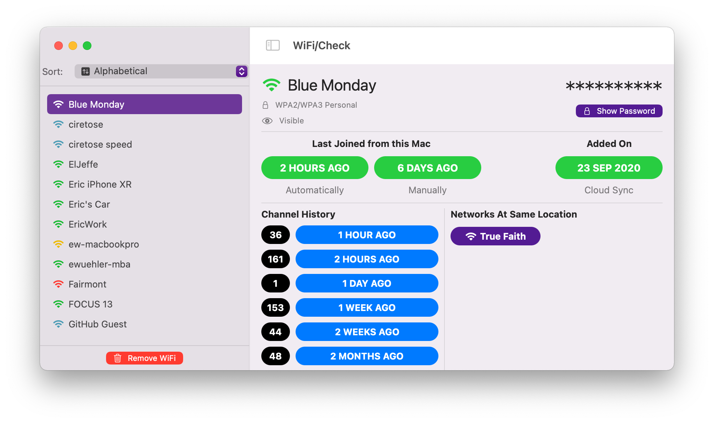

WiFi Check is a simple app that displays information about the WiFi connections made from your Mac. Recent version of macOS have changed the way this information is stored, so I updated the app to work with macOS 26. Enjoy!

You should be skeptical of anything you download from some relatively unknown location. The app has been notarized by Apple - which is not a guarantee that it is "safe", but it means at least Apple has run it through whatever "app checker" they have and didn't create any red flags. The source is available on GitHub if you'd like to inspect it yourself.
Smart! I wouldn't trust any app I just downloaded either. Hence, the option to "try it out" by copying the required file to a location the app can read from.
Yes. However, if you want to find this information yourself, this can also
be found by opening the Keychain Access app from your
/Applications/Utilities folder, searching for your WiFi network
name, selecting the item in the list, clicking on the "Show password" checkbox...
Anyway, this was more of convenience, and it uses the Apple supplied Keychain APIs,
so up to you.
No. This removes the WiFi entry from your saved list of "known networks". If you remove the WiFi you will have to rejoin that WiFi just like you did the first time. Worst case scenario.
You can also remove old WiFi connections outside the context of the app. If you go into
your System Settings, select Wi-Fi, then scroll to the bottom and
click Advanced... you'll see a list of "Known Networks".
This should be the same list you see in the WiFi Check app. You can remove
items from the list here. The app uses the command line networksetup to remove the
network.
¯\_(ツ)_/¯
I was curious about the information stored in the
/Library/Preferences/com.apple.wifi.known-networks.plist file and
wrote an app to display it. I've found it useful to see what networks my
Mac remembers and to remove networks I no longer use.